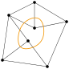
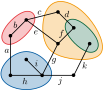
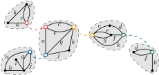

Clustered Planarity
Definition

Given a graph \(G=(V,E)\) equipped with a cluster hierarchy \(T\), which is a rooted tree with the vertices \(V\) as leaves. Each inner node \(\mu\) of \(T\) represents a cluster encompassing all leaves \(V_\mu\) of the subtree rooted at \(\mu\). A cluster planar drawing is a planar drawing that also maps every cluster \(\mu\) to a simple closed region \(R_\mu\) such that 1. \(R_\mu\) encloses exactly the vertices \(V_\mu\), 2. no two cluster region boundaries intersect, and 3. no edge intersects the boundary of a cluster more than once. A cluster graph is cluster planar if it admits a cluster planar drawing.
Background
Lengauer (1989) first discussed Clustered Planarity under a different name, which is why it was later independently rediscovered by Feng, Cohen, and Eades (1995). Both gave polynomial-time algorithms for the case where the subgraph induced by any cluster is connected. While efficient algorithms were found for many other special cases (Angelini2019?) (Cortese2008?) (Fulek2015?) (Gutwenger2002?), it took almost 30 years until Fulek and Tóth (2022) found an \(O((n+d)^8)\) solution to the general problem in 2019. Subsequently, Bläsius et al. (Blaesius2021?) gave a solution with a running time of \(O((n+d)^2)\), which also reveals the main concepts for solving Clustered Planarity.
See also
Complexity
Let \(d\) be the number of edge-cluster boundary crossings and $be the maximum number of edges crossing a single cluster border. Clustered Planarity can be solved in time…
- \(O(n+d\cdot \Delta)\subset O(n^4)\) via Synchronized Planarity with SPQR-node expansion
- \(O((n+d)^2)\subset O(n^4)\) via Synchronized Planarity
- \(O((n+d)^8)\subset O(n^{16})\) via Atomic Embeddability
 
Partial Solutions
- polynomial if the subgraph induced by any cluster is connected (Lengauer1989?; Feng1995?)
- (Angelini2019?)
- (Cortese2008?)
- (Fulek2015?)
- (Gutwenger2002?)